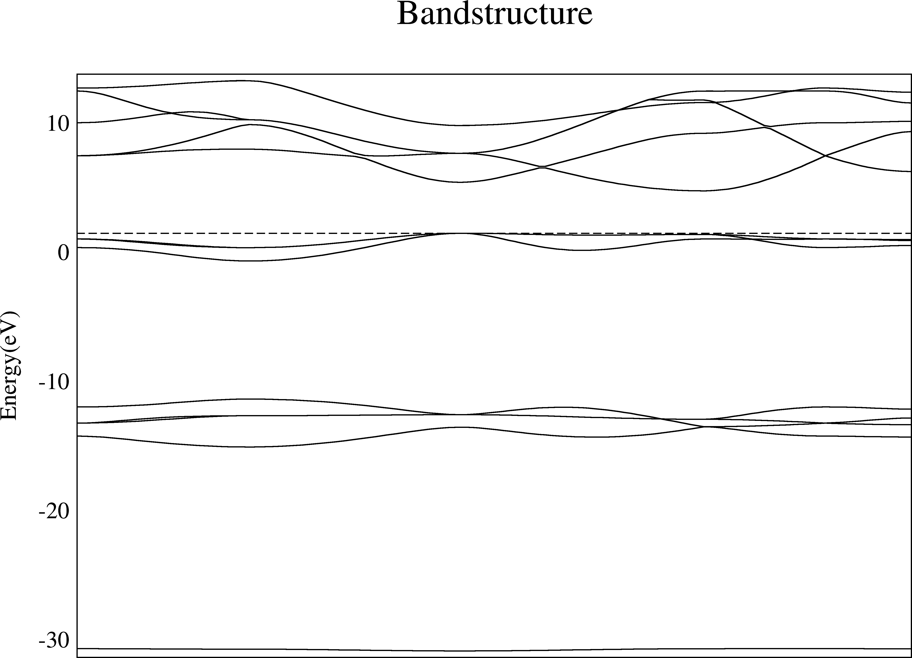

Band structure post-processing¶
Overview of py_band.py¶
py_band.py provides a all-in-one solution to plot and analyze band structures from multiple packages. It supports some key features in the band structure processing. Here we provides some examples to show its functions.
How to use¶
The easiest way to use py_band.py is
- Do a band structure calculation of given package (Like WIEN2K or VASP), keeps all the output files
- Type py_band.py and press enter
- The band structure is plotted in band/plotband.agr
- Use xmgrace band/plotband.agr to see the band structure in xmgrace.
- Other band information, like the band gap, is written in other files
band/band.gap. All information is written inband/band.xml.
In general, to quickly view the bandstructure, just type
$ py_band.py
$ xmgrace band/plotband.agr
We choose SrO as our testing materials. The plot looks like this:
{kind=link}
However, you may not satisfy with the default picture. There are multiple ways to make it better.
Better style¶
The default picture in xmgrace consists of very thin lines if you have never adjust the xmgrace default template.
To make it fit to the paper and slides, we make the lines thicker and characters larger that can be done in xmgrace. After setting all line width to 2 and char size to 1.5, we have

Now this image is much more clear than the default one.
However, we would like to get a .agr file immediately instead of manually modifying it in xmgrace with lots of mouse clicks. It is possible with the option -plotinfo.
$ py_band.py --plotinfo plotsetting.json
$ xmgrace band/plotband.agr
The file plotsetting.json must be created by the user, which can be used multiple times. To achieve the effect above, we define following options:
{"plot_setting":
{
"ymin" : -3,
"ymax" : 15,
"frame linewidth" : 2,
"line linewidth" : 2,
"symbol linewidth" : 2,
"yaxis label char size" : 1.5,
"yaxis ticklabel char size" : 1.5,
"xaxis ticklabel char size" : 1.5,
"title" : "\"\""
}
}
Align Valence Band Maximum to 0¶
In previous pictures, the valence band maximum (VBM) is indicated as a dashed line (for metals it is the Fermi level), but it is not 0. As plenty of publications use the 0 as the VBM, we can also do it easily here.
To do this, we just add two options:
$ py_band.py -f -g --plotinfo plotsetting.json
Where -f means to overwrite the previous band folder (or you will see nothing changed!) and -g means to put the VBM or Fermi level at 0, and shift all other pictures.

Mark special k-points¶
This bandstructure contains only eigenvalues, which does not mark any special k-points. As the maximums and minimums are often at the special points, and in the literatures they are always displayed, it is better to mark them.
Unfortunately, there is no unique way to get the names of special k-points from most first-principles calculations. In WIEN2K, the templates indeed contains the names of special k-points and can be read. In most other programs, the names are not even written at anywhere.
So at most time we must input the names of k-points manually. To do this, we can use the -kname options. In this
$ py_band.py -f -g -kname "1 W 21 L 31 Lambda 41 Gamma 61 Delta 81 X 91 Z 101 W 111 K" --plotinfo plotsetting.json

So by specifying the index and the name of a special k-point, we will add one vertical line in the plot to indicate its position. Note the index starts from 1 here.
Resolve band crossing¶
The band crossing is a common phenomenon in materials. However, there is also no unique way to determine whether two eigenvalue/eigenvectors are belong to the same band or not. Generally, we just plot the eigenvalues from small to large and connect them just in the order, which produces distorted plots, and all bands will never cross each other.
In Quantum-Espresso, the plotband.x supports to classify bands according to symmetry or wavefunction coefficients, but does not always work very well as it may connects totally different bands together.
In py_band.py, we choose to use the differences between eigenvalues as the standard, as a band should be continous in the k-space. This method does not figure out all crossovers and not work at special k-points as the band may change the direction. The advantage is it is pretty stable and produces less exotic bands.
Note this feature is not optimized very well and may cost lot of CPU times when there are lots of bands. Also, this method does not work for the spin-orbit coupling calculations as the eigenvalues of bands with same space orbitals and different spins are very close, which makes this method pretty unstable.
$ py_band.py -f -g -kname "1 W 21 L 31 Lambda 41 Gamma 61 Delta 81 X 91 Z 101 W 111 K" --cross --plotinfo plotsetting.json

From the pictures above we can see that bands are indeed crossover. To make it more clear, we use different colors for each bands:

Band Characters¶
Each band can be projected onto atomic orbitals of the basis set or the projectors in pseudopotentials. This information is important, but not very easy to display on the screen. Here py_band.py supports plot it above the band structure.
With this feature, a picture is directly generated as xmgrace is not very good at plotting multiple objects. The library matplotlib is used to do it.
To plot with band characters, we need to add more things in the file specified by -plotinfo. We create plotinfo1.json like this:
{"orb_map":
[
{
"cond":{"none":1},
"plot":{"mode":"line",
"size":2,
"color":"white"}
},
{
"cond":{"l":1},
"plot":{"mode":"line",
"color":"blue",
"size":2}
},
{
"cond":{"l":0},
"plot":{"mode":"line",
"color":"red",
"size":4}
}
],
"plot_setting":
{
"ymin" : -3,
"ymax" : 15
}
}
The plot_setting part is the same as above, but not all options are available. The option orb_map controls how to plot the character, which contains an array of objects with two keys, cond and plot. For each array element, cond indicates which kinds of orbitals this element applies, and plot indicates what should be plotted on the picture. A special cond that with a key “none” must exist, which is the default one for orbitals not mentioned in this file.
In plot part, it is possible to control the color and the line width. The final color and line width is the averaged between all orbitals, and their weights are the orbital coefficients. Use above file as an example, this means for one band if it is pure p orbital (l=1), then it is blue and have line width 2, and if it is pure s orbital (l=0), it is red and have line width 4. If it is neither s nor p orbital, it is white and has line width 2. If it is mixed, then we just do an average. After creating the file, we can run the command and get the result:
$ py_band.py -f -g -kname "1 W 21 L 31 Lambda 41 Gamma 61 Delta 81 X 91 Z 101 W 111 K" --cross --plotinfo plotinfo1.json

Also we can plot with symbol instead of lines. To do this we must specify the symbol shape and change “mode”:”line” to “mode”:”symbol”.
{"orb_map":
[
{
"cond":{"none":1},
"plot":{"mode":"symbol",
"symbol":"o",
"size":25,
"color":"white"}
},
{
"cond":{"l":1},
"plot":{"mode":"symbol",
"symbol":"o",
"color":"blue"}
},
{
"cond":{"l":0},
"plot":{"mode":"symbol",
"symbol":"o",
"color":"red"}
}
],
"plot_setting":
{
"ymin" : -3,
"ymax" : 15
}
}

Other Functions¶
Sometimes we may have a k-points not exactly what we want in the band structure calculation. For example, to calculate band structures with hybrid functionals, we may include some k-points for self-consistent calculations together with the special k-points. So we do not need to plot them in the picture.
This can be done by -removek options which deletes first N k-points from the calculation.
Sometimes we would like to compare two band structures by plotting them in the same picture. With py_mergeagr.py we can join two band structures in .agr format directly. It can convert the first band structure to black and the second band structure to red.
However, the x-axis maybe scaled, so a simple joint of two pictures may cause problem. py_band.py supports copy k-points from another py_band.py output that creates exactly the same k-points for later comparison. This can be done with options –copyk.
Summary¶
From above we have already show the what py_band.py can do. It has following features:
- Gather band structure information into different files, including eigenvalues, k-points, the Fermi energy, the valence band maximum, the band gap, the number of electrons, the number of spins. Meanwhile, the same information is also put into one xml file.
- Plot band structures as xmgrace and gnuplot format
- Files mentioned above are saved in
bandfolder by default, named asband.*. Plots are saved asplotband.* - Disentangle band-crossing with eigenvalues only, determined by derivatives
- Add k-points names on the plots
- Plot eigenvalues with k-points names and coordinates from other calculations. This makes two plots comparable and can be merged with py_mergeagr.py.
- Can convert the unit of k-points when plotting (Cartesian or reciporocal lattice vectors). This may makes one plots comparable with other plots and literature.
- Can remove some k-points when plotting which faciliate plotting of band structures from hybrid functionals which must include some k-points for SCF in calculations
py_band.py is able to read output of multiple packages. For different packages, differnt extra filenames must be provided to run py_band.py. Supported ones are:
- WIEN2K None, must run in the case folder. Require case.energy_band
- FHI-GAP The file suffix like _gw-band. Must run in the case folder. The suffix _gw-band menas using
case.energy_gw-band - VASP None, must run in the case folder. Require at least one of OUTCAR, EIGENVAL or vasprun.xml
- SIESTA 3 files, case.fdf, stdout and case.band
- QuantumEspresso stdout from pw.x
- ABINIT 2 files, _EIG or _GW, and stdout
- Wannier90 1 file, _w90_band.dat, other files will be read according to the seedname
- RAW 1 folder, which contains all files generated by this program
Help¶
The simplified program help file is list below.
usage: py_band.py [-h] [-i PROGRAM] [-g] [--electron ELECTRON] [-s]
[-d OUTPUTDIR] [-k KPOINTSUNIT] [-f] [--cross]
[--plotinfo FILEPLOTINFO] [--copyk COPYKPOINTS]
[--removek REMOVEKPOINTS] [--kname NAMEK]
[--alignenergy ALIGNENERGY]
[extra_args [extra_args ...]]
Plot band strcture of specific package in specific format, also create plain tabular seperated text of band structure data and k-points list.
File required:
SIESTA : .fdf , stdout, .bands
VASP : none, require to run in the case folder
WIEN2K : none , require to run in the case folder
FHI-GAP : energy file name suffix (_gw-band or _gw0-band) , require to run in the WIEN2k case folder
QE : data-file.xml in the save folder, or pw.x output
ABINIT : _EIG output or _GW output
Wannier90: _w90_band.dat file ( other files are necessary but will be selected according to this file name)
Yambo : o-*.qp file
RAW: folder name contains all files generated by %prog
By default, output folder is current folder, so it is sugguested to run this in an empty folder to avoid overwritten as it will create plenty of files.
Band characteres can also be plotted. To do this add "--plotinfo File". The input file contains extra format informations.
positional arguments:
extra_args Arguments passed to package-specific procedures
optional arguments:
-h, --help show this help message and exit
-i PROGRAM The package name
-g Shift band position to make VBM = 0 in graph
--electron ELECTRON The number of electrons in the system of the band
structure. This is used to determine VBM/Fermi energy.
If not specified, this program will try to find from
input files
-s Do not plot band structure, just write band structure
data and k-point list in space-seperated format
-d OUTPUTDIR The name of folder used to store output files
-k KPOINTSUNIT The unit of k-points in the output, also determine
x-axis distance. Possible options include
'cart','crystal' and 'default', where default means
use what the program read.
-f Control whether to overwrite if the output directory
already exists, default is not
--cross Contrl whether to resolving band-crossing by
derivatives
--plotinfo FILEPLOTINFO
The input file for plotting parameters, include band
structure with band characters indicated
--copyk COPYKPOINTS Copy k-points information from given band.xml, instead
of use what is read. This to make two plots have the
same x-coord
--removek REMOVEKPOINTS
Remove the first N k-points in the bandstructure,
especially useful when plotting HSE / metaGGA bands
that must be calculated with full M-P k-points self-
consistently
--kname NAMEK Provide a list of names of k-points that will be
plotted, in format " 1 Gamma 30 X 50 L", indicies
start from 1, this works before --removek
--alignenergy ALIGNENERGY
Manually specify the energy to align instead of using
VBM/Fermi energy automatically read. The unit must be
the same as what the package outputs.